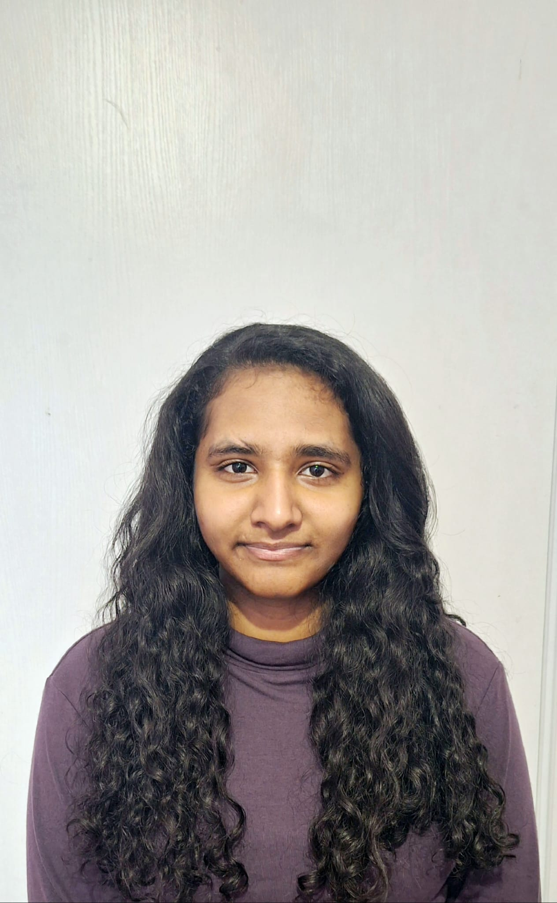

Paris, Île-de-France
Je suis étudiante en Bachelor Informatique à SUPINFO Paris, passionnée par le support IT, les systèmes et le web.
• J’aime aider les utilisateurs, résoudre les incidents et rendre
la technologie plus simple, plus claire et plus efficace au quotidien.
• Ce que j’apporte :
Développement d’outils informatiques
Gestion et structuration des données
Sécurisation des systèmes
Administration Windows et Linux
Support et assistance aux utilisateurs
Je recherche une alternance (12 à 24 mois) dès septembre 2026 :
• Support IT : assistance utilisateurs, gestion des tickets, configuration de postes.
• Développement Web : création d’interfaces (front-end), développement de fonctionnalités et logique métier (back-end), amélioration UX.
• Cybersécurité : durcissement Windows/Linux, surveillance des logs, bonnes pratiques.
